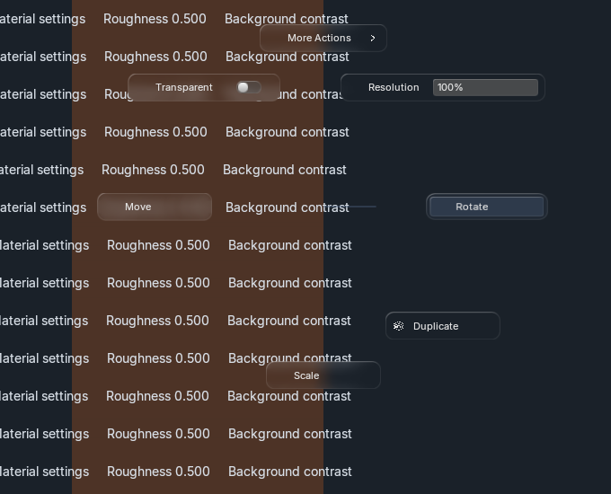
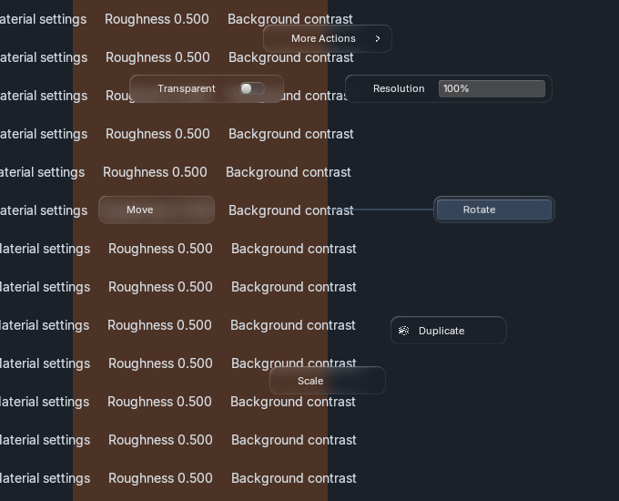
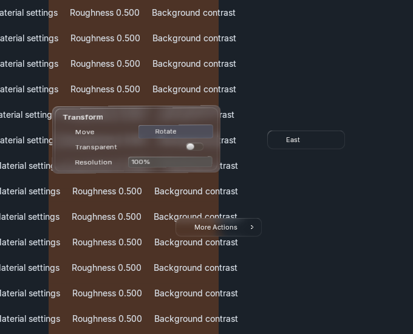
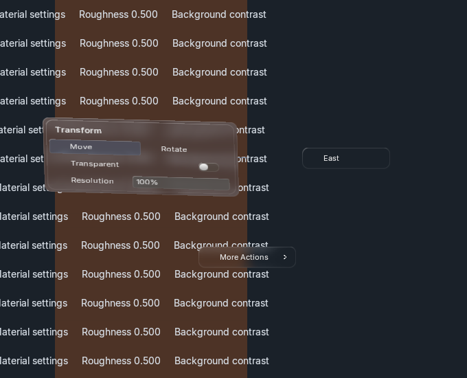
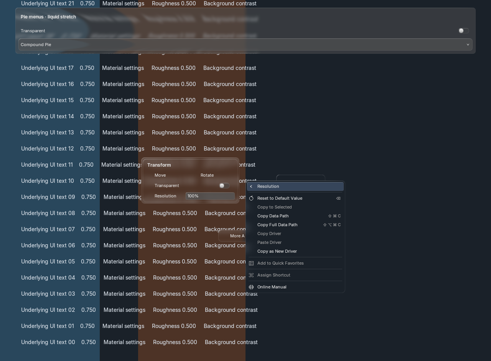

Actual Blender GPU captures · 30 October 2026 · source glass, theme and spring motion.
The pie grows from its opening point. Moving toward a slot pulls and stretches its surface; proximity strengthens its highlight and the guide line. Natural field widths and circular spacing keep labels readable and slots apart. Hit targets remain stable.
Rendering and interaction checks passed. Focus safety did not: some launches activated Blender despite --no-window-focus. No app activation or focus-restoration commands were used. These are implementation captures for your QA, not generated references or a claim of exact parity.





Open full-resolution PNGs; compare logical text size, not expanded image width.
| Blender / UI scale | Simple pie | Compound | Narrow fallback | Motion disabled |
|---|---|---|---|---|
| 5.2.2 / 1× | PNG | PNG | PNG | PNG |
| 5.2.2 / 1.5× | PNG | PNG | PNG | PNG |
| 5.2.2 / 2× | PNG | PNG | PNG | PNG |
| 5.1.2 / 1× | PNG | PNG | PNG | PNG |
Four GPU fixtures, two native N-panel input fixtures and six background regression processes passed. 192 animation frames were byte-identical with native text batching on/off. Each fixture retained one shared backdrop/strong-blur revision and stable shader/batch/font resources.
1× warm CPU paint medians: simple pie 0.211 ms, compound 0.197 ms; p95 0.248/0.229 ms. Paired ordinary-list medians: 0.140 ms baseline, 0.144 ms current. These measure CPU submission, not GPU completion or end-to-end latency. The 1.5× paired-list p95 outlier (0.474 ms) remains visible in the raw report; performance acceptance is not claimed.
Results and open gaps · All launch/runtime/source records · Focus audit · Pointer/motion trajectory · Integration